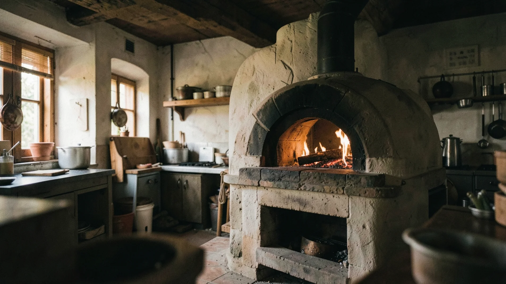

Benvenuti
Pizza da forno a legna a Padova
Ingredienti *DOP* e cottura in 90 secondi
Prenota il tuo tavoloLa frustrazione
Mangi pizze fredde, impasti senza lievitazione e forni che non scaldano mai veramente. Cerchi una pizza che valga la pena di tornare, ma ogni volta esci deluso. Vuoi il sapore vero, quello che ricordi per anni, non un prodotto da asporto qualsiasi.
Specialita della casa
Pizza Margherita DOP
La nostra firma: pomodori San Marzano DOP, mozzarella di bufala campana DOP, basilico genuino. Un'esperienza che torna alla sua origine.
- Cottura 90 secondi in forno a legna
- Pomodori San Marzano DOP
- Mozzarella di bufala campana DOP
- Basilico appena coltivato
su preventivo
Prenotazione consigliata per tavoli numerosi
Prenota oraPerché scegliere Savonarola
Ingredienti DOP
Cottura in forno a legna
Forno acceso tutto l'anno
Di tradizione impiegata
Vieni a trovarci
Prenota il tuo tavolo e scopri lo sapore di una pizza cotta nel forno a legna.
Domande frequenti
Tutto quello che devi sapere
Accettate prenotazioni online?
Sì, prenota il tuo tavolo direttamente dal sito.
Usate ingredienti DOP?
Sì, solo ingredienti con denominazione di origine protetta, selezionati tra le tradizioni venete e campane.
C'è il forno a legna?
Sì, il forno è acceso ogni giorno e cuoce le pizze in 90 secondi.
Dove siete a Padova?
Nel centro di Padova, in Savonarola.